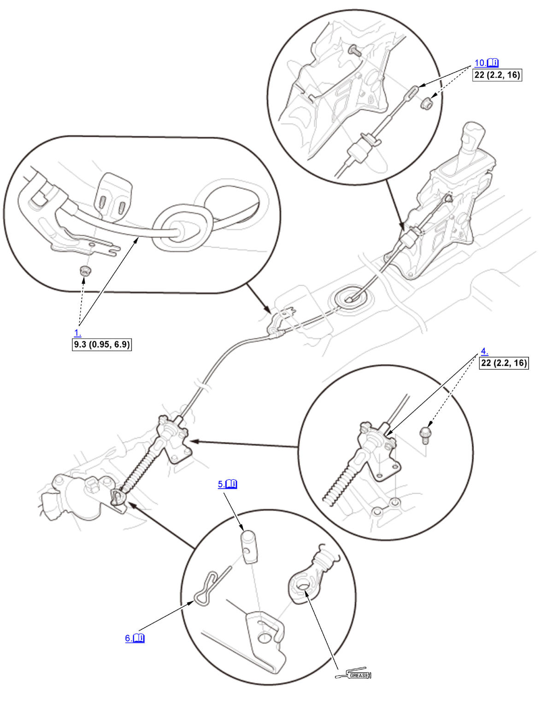

Shift Cable Removal and Installation (K20C2 (CVT)): Installation: Procedure
Numbered call-outs in figure pertain to list numbers in following procedure.

Courtesy of HONDA, U.S.A., INC. |
Detailed information, notes and precautions |
 |
Torque: N.m (kgf.m, lbf.ft) |
| Apply molybdenum grease to inner surface of hole. |
- Shift Cable (Under Side) - Install
- Heat Shield (Exhaust Pipe A) - Install
- Engine Undercover - Install
- Shift Cable Bracket - Install
- Control Pin - Install
NOTE: Make sure the control pin (A) is inserted through the shift cable end (B) and fully seated on the control lever (C).
- Lock Pin - Install
NOTE: Make sure the lock pin (A) is inserted through the control pin hole (B) to the opening (C) of the control lever (D) so that the hooked end (E) of the lock pin locks into the control pin hole.
- Intake Air Duct - Install
- Air Cleaner - Install
- Shift Cable - Adjust
- Shift Cable (Shift Lever Side) - Install
NOTE:
- Install the socket holder (A), then rotate the socket holder retainer (B) clockwise until it stops.
- Do not install the shift cable by holding the shift cable guide (C).
NOTE: Make sure the shift cable end (A) is properly installed on the mounting stud (B).
- If the cable end is out of position with the mounting stud, remove the shift cable from the shift cable bracket, then reinstall the cable end over the mounting stud before reinstalling the shift cable to the shift cable bracket. Do not install the shift cable end on the mounting stud with the shift cable installed on the shift cable bracket.
- If the shift cable end does not ride at the bottom of the mounting stud, rotate the stud to align the square fitting with the hole.
- 6.0 mm (0.236 in) Pin - Remove
- Center Console - Install
- Shift Cable - After Install Check
1. Turn the vehicle to the ON mode. 2. Move the shift lever through all positions/modes, and check that the shift position indicator follows the shift lever operation.
3. Shift the transmission to P position/mode, and check that the shift lock works properly.
4. Push the shift lock release, and check that the shift lever releases. Also check that the shift lever locks when it is shifted back to P.
5. Check that the back-up lights come on when the transmission is in R position/mode.
6. Start the engine.
NOTE: Check that the engine starts in P or N position/mode, and does not start in any other positions/modes.
7. Make sure the vehicle is turned to the OFF (LOCK) mode with the shift lever in P position/mode. If it does not, adjust the shift cable again.